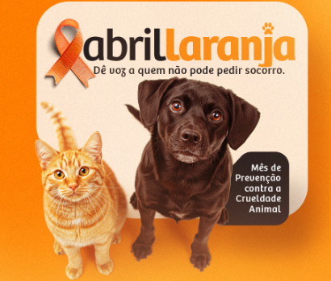
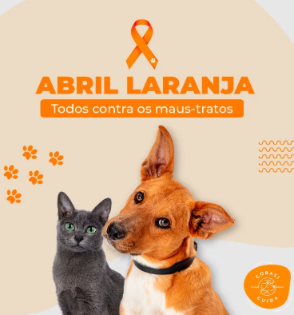

- As ONGs de proteção animal desempenham um papel fundamental na luta contra os maus-tratos e no cuidado com animais abandonados. Essas organizações atuam de forma independente, muitas vezes com a ajuda de voluntários e doações.
- Uma das principais funções das ONGs é o resgate de animais em situação de risco, como abandono, violência ou doenças. Após o resgate, os animais recebem cuidados veterinários, alimentação e abrigo.
- Além disso, as ONGs promovem campanhas de adoção responsável, buscando encontrar lares seguros e amorosos para os animais resgatados.
- Essas organizações também ajudam a conscientizar a população, realizando campanhas educativas e divulgando informações sobre os direitos dos animais.

|
- Muitas ONGs dependem de doações para continuar funcionando, como ração, medicamentos e apoio financeiro. Por isso, a participação da sociedade é essencial para manter esse trabalho ativo.
- Outro ponto importante é que essas organizações ajudam na redução do número de animais abandonados, promovendo a castração e incentivando a posse responsável.
- As ONGs também atuam denunciando casos de maus-tratos, colaborando com autoridades para garantir que os responsáveis sejam punidos.
- Portanto, as ONGs são essenciais para a proteção animal, pois atuam diretamente no resgate, cuidado e conscientização, contribuindo para uma sociedade mais justa e responsável.

|